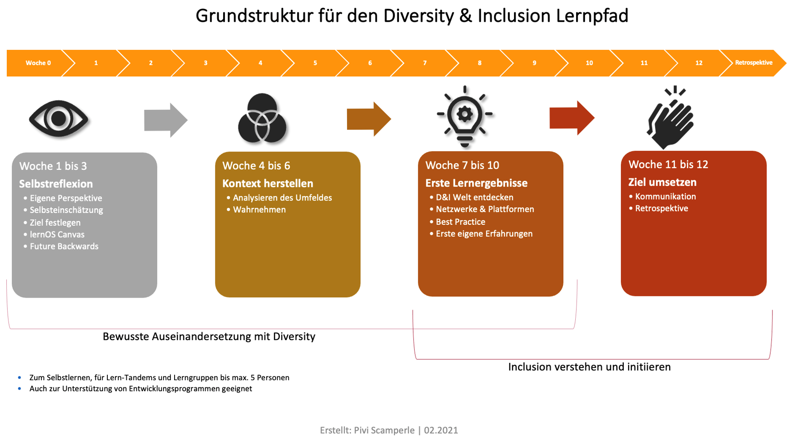

Grundlagen
Das Verb „lernos" ist die Zukunftsform von „lernen" auf Esperanto (mi lernos = ich werde lernen, ni lernos = wir werden lernen). lernOS ist ein Betriebssystem für lebenslanges Lernen und lernende Organisationen. lernOS ist aber keine Software, sondern „Brainware". Es ist eine Art zu denken und zu handeln, um als Einzelperson, Team oder Organisation im 21. Jahrhundert erfolgreich zu sein. Das großgeschriebene „OS" im Namen unterstreicht die Bedeutung der Digitalisierung für unsere vernetzte Wissensgesellschaft.
Zu lernOS gibt es drei grundlegende Leitfäden, die den Ansatz auf individueller Ebene (lernOS für Dich), auf Ebene von Teams (lernOS für Teams) und auf Ebene von Organisationen (lernOS für Organisationen) beschreiben. Zusätzlich gibt es die lernOS-Toolbox, die oft genutzte Methoden und Werkzeuge erklärt (z.B. Podcast, Barcamp^1^, Sketchnoting^2^, Expert Debriefing^3^). lernOS ist nicht auf der sprichwörtlichen grünen Wiese entstanden, sondern eine Zusammenstellung von bereits bestehenden und bewährten Methoden. Alle lernOS-Leitfäden sind unter der offenen Lizenz Creative Commons Attribution (CC BY)^4^ auf der lernOS-Webseite verfügbar und dürfen an die eigenen Bedürfnisse angepasst werden.
Wenn du weitere Fragen bezüglich lernOS hast oder Unterstützung von Gleichgesinnten brauchst, kannst du die Community-Plattform CONNECT nutzen oder unter #lernOS auf Twitter schreiben. Beachte: Die Meisterschaft in lernOS ist eine Frage von Monaten oder Jahren, nicht von Stunden oder Tagen.
Also: Keep Calm & Learn On!
Einleitung
Dieser lernOS-Guide behandelt das Thema Diversity & Inclusion. Diversity, zu Deutsch Vielfalt, beschreibt die Gemeinsamkeiten und Unterschiede von Menschen. Inclusion hingegen verweist auf den wertschätzenden Umgang mit Vielfalt. Es ist nicht zu verwechseln mit INKLUSION, ein Wort, das im deutschsprachigen Raum meist in Verbindung mit dem Thema „Behinderung" verwendet wird. Mach dich auf die Suche nach deiner Definition. Besonders den breiten Ansatz zu Diversity von der Charta der Vielfalt solltest du dir ansehen: https://www.charta-der-vielfalt.de/
Noch ein paar Anmerkungen vorneweg:
Dieser lernOS Diversity & Inclusion bezieht sich mit seinen Inhalten, Links und Hinweisen auf Deutschland. Bei Adaptionen für andere Länder und Übersetzungen in andere Sprachen solltest du das berücksichtigen und entsprechende Anpassungen vornehmen.
Er richtet sich sowohl an Einzelpersonen als auch an Gruppen bis 5 Personen. Der Einfachheit halber haben wir für die Ansprache durchgehend die Du-Form verwendet. Lediglich dort, wo es ausschließlich um Gruppenerklärungen geht, weichen wir davon ab. Selbstverständlich verwenden wir eine geschlechtergerechte Sprache mit geschlechtsneutralen Formen oder dem Gender-Stern. Wir möchten mittels des Gender-Sterns alle Geschlechter -- auch über die binäre Identität hinaus - benennen. Der Stern drückt dabei bildhaft durch seine Strahlen die Vielzahl von möglichen Geschlechtern aus. Mehr Informationen zu gendergerechter Sprache gibt es auch hier: https://fairlanguage.com/
Die Lernreise im Überblick
In den nächsten 13 Wochen gehst du auf eine Lernreise. Du startest nicht mit 1, sondern bei Woche 0. Du wählst dein Ziel selbst, aber der Lernpfad navigiert dich immer auf dem richtigen (inhaltlichen) Weg. Dabei eignest du dir Grundlagenwissen an und bekommst Hinweise zu sinnvollen Quellen sowie Übungen an die Hand, die dir dabei helfen, dein Ziel in Bezug auf Diversity & Inclusion zu erreichen.
Dazu machst du zuerst eine Bestandsaufnahme: Selbstreflexion -- Woche 0 bis 3. Wo startest du mit dem Thema? Zuerst findest du dein Ziel und lernst, es zu formulieren. Dann legst du den für dich richtigen Startpunkt fest. Hier ist es besonders wichtig, dass du dein Lernziel klar benennst und dich nicht in der ganzen Breite des Themas Diversity verlierst.
Während der Wochen 4 bis 6 stellst du den Status Quo in deinem Umfeld fest, damit du dein Ziel und deine Lernreise dorthin in einen Kontext setzen kannst. Diversity & Inclusion ist ein weitläufiges und vielschichtiges Thema, es funktioniert nicht nach einem Schema F. Deshalb ist der Kontext, in dem du dich bewegst, dein Lernziel steckst und verfolgst, so wichtig. Wenn du dies gut gemacht hast, dann kannst du dir alle Facetten von Diversity & Inclusion ansehen und findest immer wieder auf deinen Lernpfad zurück. Denn in den darauffolgenden drei Wochen wirst du auf deiner Lernreise weiter vorankommen. Du lernst Methoden kennen, die dir dabei helfen, das Thema bezogen auf dein Ziel zu verinnerlichen. Und du lernst auch, was dich auf dem Weg ausbremsen oder ablenken könnte.
In den Wochen 7 bis 9 hilft dir der Lernpfad, kompetent im Thema zu werden, deine Kompetenz bezüglich Diversity zu vertiefen und echte Lernerlebnisse zu generieren. Und dann geht es auch schon auf den Endspurt zu -- in den Wochen 10 bis 12 wirst du das, was du in den Wochen davor gelernt hast, anwenden und ausprobieren.
Du solltest pro Woche mindestens 2 Stunden Zeit einplanen. Es gibt immer auch Tipps, wenn du mehr machen möchtest. Vor- und Nachbereitungszeiten können dabei variieren. Und keine Angst, dass es dir zu viel werden könnte! Du kannst immer mal einen Zwischenstopp einlegen. Außerdem kannst du dein Lernziel anpassen, tiefer ins Thema einsteigen oder dich mit anderen (oder in deiner Gruppe) austauschen. Wenn dir mal die Motivation fehlt oder du dich überfordert fühlst, ist das okay. Verzweifle nicht! Deine Lernreise verläuft nicht immer linear, hin und wieder gibt es eben einen Stopp oder die Reise erfolgt langsamer als geplant, biegt irgendwo ab oder will einfach nur mal kurz innehalten. All das ist in Ordnung, vergiss das nicht. Und nun: viel Spaß bei deiner Reise!

Schematische Darstellung der Struktur des Lernpfads.